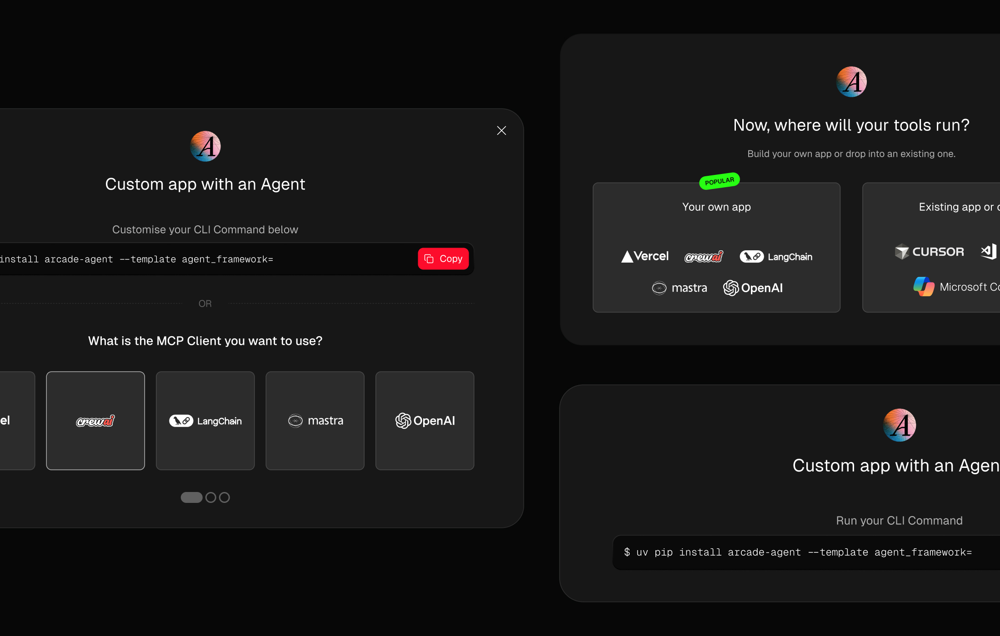

Your AI is impressive.
But most of your users never get to see it.
They get lost before they reach the value.
They land and start guessing.
One path. Then another. Then another.
Each one dead-ends somewhere confusing.
Most give up before they reach the value.
The few who push through are your retention number.
The rest churn silently.
This is where I come in with Crucial.Design.
I find the straight line from confusion to clarity.
I don't start with pixels. I start with the thinking. Then I design.